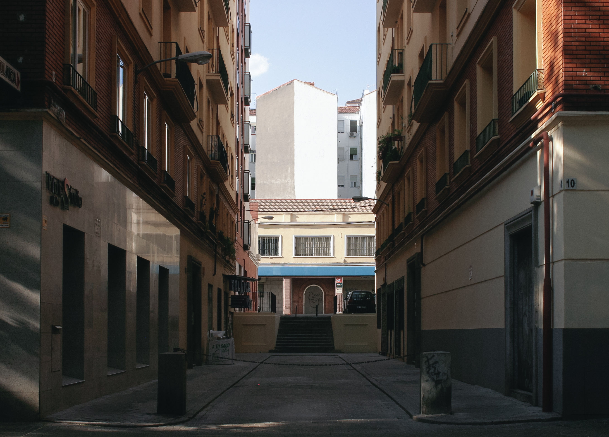
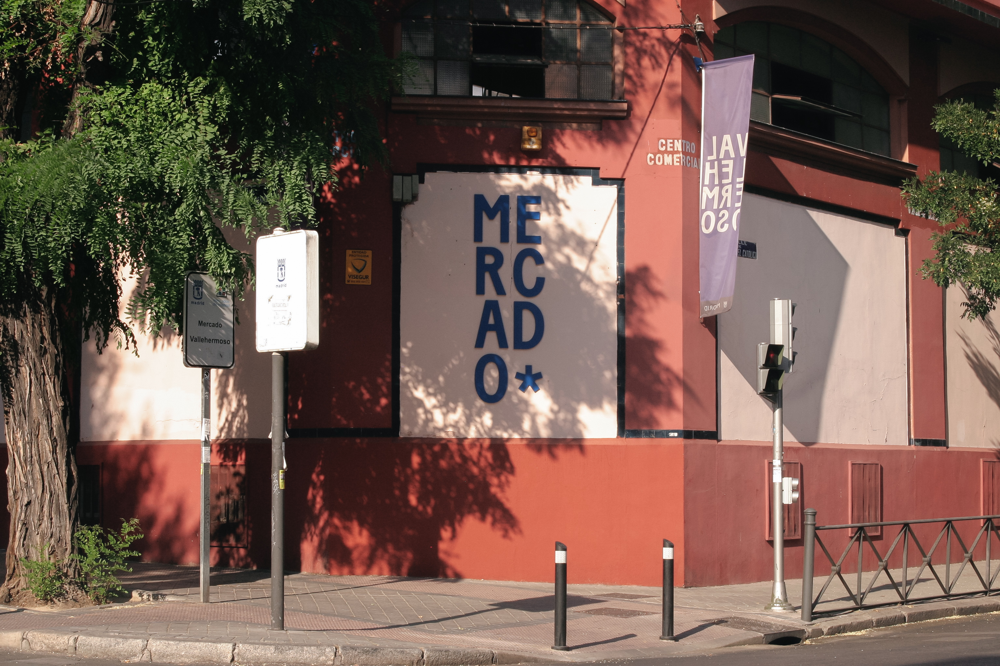
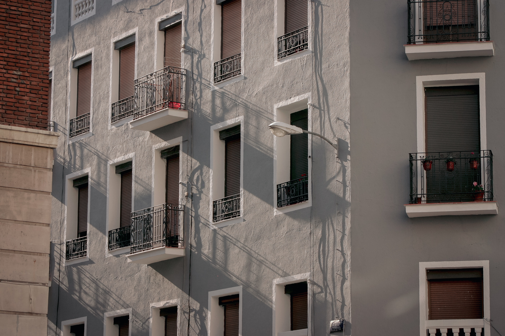
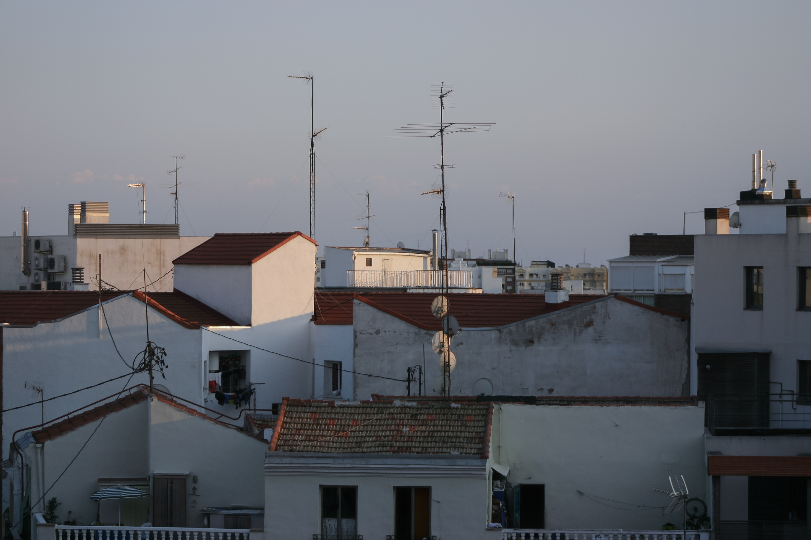
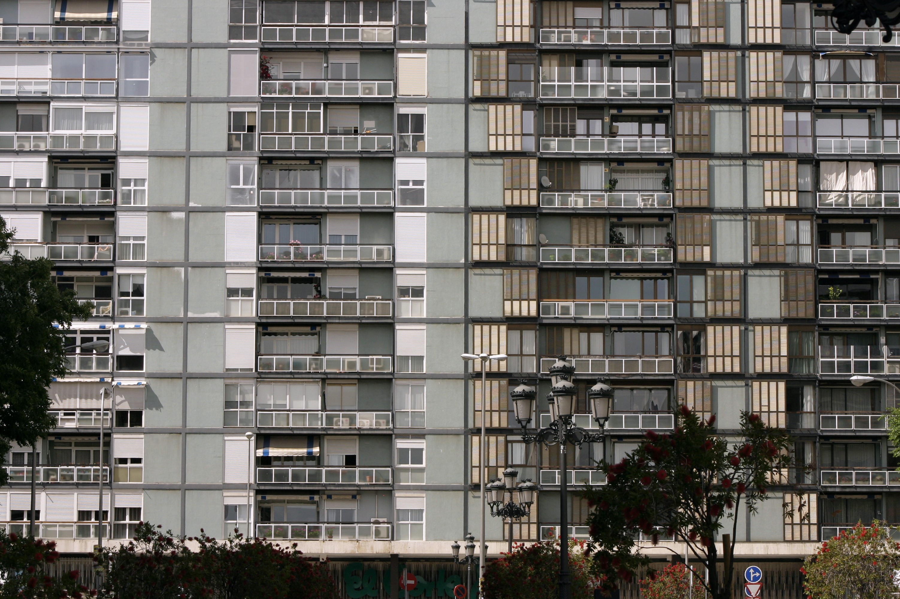
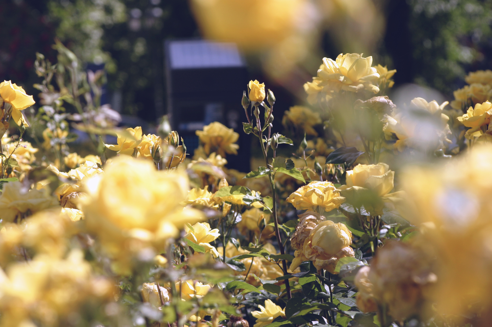

This is my personal brand page. I'm not even entirely sure what that means, because, does anyone truly know who they are and what they represent? Enough to brand themselves? It all seems rather pompous to me, but here we are. Luckily, the handle
This page will contain several elements of what I believe make up who I am if I had to brand me. Within, you may find any of, but not limited to, the following:
- existential musings (text posts i suppose)
- recommended reading (books)
- a safe space for introverts
- some of my photography or other art
- i hope a few puns
- and beyond...
And most importantly, all of this with a humorous twist (hence hileahrious).
//////////// C O N T E N T ////////////
Don't let your life lenses get poop stains
This morning, however, is something to write about. Really, nothing special happened. It's been raining in Madrid for the past week, which cuts down on my hard-core, urban biking lifestyle (what a description), and as a result I occasionally take the metro or bus.
I picked up a to-go coffee & crescent and began the descent into the depths of public-transport hell where cell-phone service is a laughable aspiration (commence out-of-touch feeling of desperation that comes without access to social media and whatsapp for FIVE MINUTES!!1). I sat down in the barren train, with half of Madrid gone this weekend on holiday... and that's when it happened.
I was watching the darkness through the window, when I suddenly felt such appreciation for the passing nothingness. It might have just been a caffeine high (I actually get those), but it was still a rather calming moment.
Now, when you experience one of these phenomena, normally the events that follow also carry some resonance of bliss. Did I wish I could have ridden my bike instead? Of course! But I then wouldn't have felt my feet on the ground, or spent those few seconds enjoying a ride on the escalator, or seen the two lip-stick ridden cigarette butts on the stairs of the exit and thought up a backstory of where they came from.
Coincidentally, my English class proceeded to involve a discussion about the here and now having infinitely more relevance than the future or past. "Live in the moment!" as my student enthusiastically proclaimed. What do you know about that?
My walk home brought even more ilusión to my mind, as I journeyed through an old neighborhood where I lived as a fresh, hablo-muy-poco-español girl embarking on her university experience. I bought some butter; I let the rain hit my face; and I walked with some true, look-at-me-now swag. I think it goes without saying, I woke up like this.
I call days like these Moments Days. In a perfect world, we should always have moments days, but we very often forget what it's like to value the small things because we don't have time or simply have too little energy to care. And so I bid thee all, don’t get too caught up in your shit that your life lenses get poop-stains.
When Korea hands you lemons...
Five good friends took me to the airport, for which I will be forever thankful. Apparently, weight requirements don’t matter in Korea, because my suitcase weighed 25 kilos and the man at the check-in counter paid no heed. I’ll blame it on my looks.
After some easy goodbyes (due to being rushed), I made it to my gate, the plane, my seat. I don’t think I’ve ever been on a double-decker plane, so that was cool. My seat, most pleasantly, was at the window with no one in the middle, and a perfect Korean ahjussi at the aisle seat. He proceeded to drink wild amounts of alcohol throughout the flight. After a few drinks, he even said I could sleep across the middle seat in broken English. I think he loved me more because I couldn’t stop responding in Korean. We hit it off.
It was the best flight I’ve experienced in the history of my universe. Probably because, for once, I did not stay up the whole time watching movies (mostly because the selection was crap), and instead slept. I started watching Total Recall, but after about 30 minutes I couldn’t take the unoriginal spy plot that seemed like a wanna-be Bourne film. Later on in the flight I made up for it by watching Bourne Legacy (for the 4th time). I’ve never felt so good after a flight so long! Nice.
I can’t stop bowing and handing my passport and money to people with two hands. Once I arrived in New York, I heard Korean all around me and saw there was a flight to Incheon… I wanted to be on it so badly. It’s only natural that NOW, when I have 5 hours to waste alone waiting for my connection to Madrid, reality sinks in.
All I want is to be back in Korea living like I was, but it is time again for a new chapter. In Korea, when life hands you lemons you eat them whole and race to see who can whistle first. Good thing I’m a whistler.
Spain has welcomed me warmly (literally, 10 degrees!!!!), and even though Seoul is grander on all levels, Madrid has its old charms. I spent the day with my mom and sister bar-hopping, enjoying beers and tapas. How I’ve missed Spanish tapas! All is well, despite my severe exhaustion, but I will beat it with a stick and defeat the jetlag.
Photography
     Follow me on Instagram »